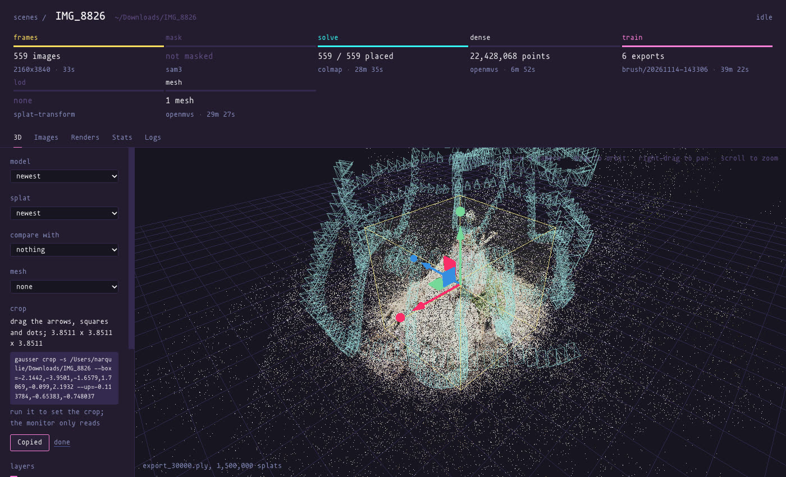
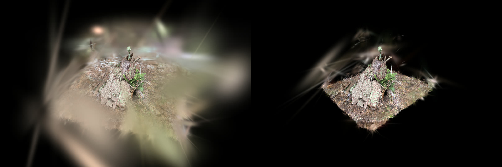
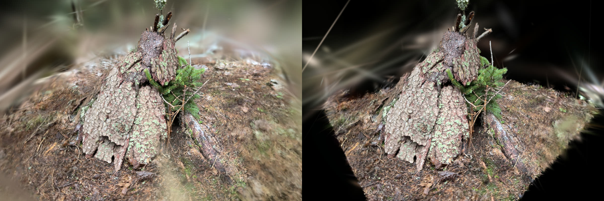
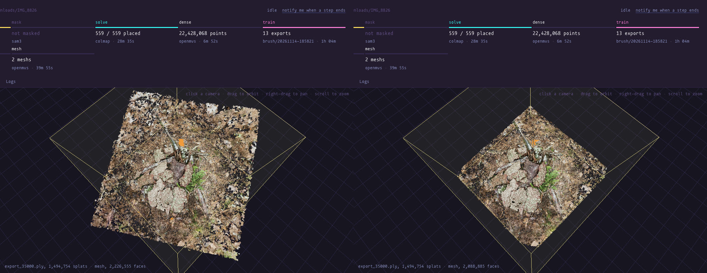

Gausser: crop box and adaptive training steps
2026-11-14 · the Captain's two improvement notes from the IMG_8826 bark-hut run · tested on scene ~/Downloads/IMG_8826 (559 frames of a 72 s iPhone 4K video)
Changelog
- gausser crop: a box around the subject in
sparse/crop.json.trainstarts Brush only from points inside it and cuts its exports to it;meshcuts the surface to it before refining and texturing. A new crop makes train and mesh out of date; a new solve drops it. - Monitor crop editor: the 3D tab draws the stored box and has a gizmo (move arrows, plane squares, per-axis scale dots) to draw a new one. It shows the
gausser crop --box=… --up=…command with a Copy button; the monitor still never writes to a scene. - train --adaptive: after
--iterations(30000), Brush continues 5000 steps at a time from its last export while the held-out PSNR gains at least 0.1 dB, up to--max-iterations(60000). A continuation that lowers PSNR leaves no export. - Small:
psnrmoved frommonitor.pytosteps.py(used by both); status says "older than the model or the crop". - Pushed earlier today:
e5a0f29, mesh layer in the monitor's 3D view.
Results on IMG_8826
| run | train | held-out PSNR | splats kept by crop | mesh |
|---|---|---|---|---|
| before (no crop, 30k) | 39m 22s | not measured (no eval split) | - | 2,226,555 faces, 29m 27s |
after (run --mesh --adaptive, crop) | 1h 04m (30k + 5k + crop) | 20.87 dB at 30k → 20.95 dB at 35k, stopped (+0.07 < 0.1) | 1,494,754 of 1,500,000 | 2,088,885 faces, 39m 55s |
Observed:
- The crop removed only 5,246 splats (0.35%), but those are the large hazy background splats: the wide view below loses the blur that filled the frame.
- Elongated splats whose centres are inside the box but which reach far out are kept; they show as thin streaks around the cut edge (right images). Filtering by extent, not only centre, would remove them; not done.
- The dense cloud lies mostly inside the box (21.7M of 22.4M points kept), so cropping the start points changed little here. It matters more for scenes whose dense cloud reaches far beyond the subject.
- The mesh crop kept 10.77M of 11.20M raw faces before refining, so it saved no time on this scene. The second mesh took 10 minutes longer. RefineMesh ran the same passes (45, 5-6, 22, 3 iterations); its 22-iteration pass took 12m 0s against 6m 29s before on a similar face count. The crop does not explain that; it may be load on the Mac, and I did not investigate further.
- The 5k continuation gained +0.07 dB, below the 0.1 dB bar, so training stopped at 35k. The curve was already flat from about 21k.
Crop: editor in the monitor
WHAT: section crop in the 3D tab: "Draw a crop box" starts from a box around the scene centre; dragging the gizmo updates the size and the command; "Copy command" puts it on the clipboard. WHY: the Captain asked for cropping in the viewer before training; the monitor stays read-only (AGENTS.md rule), so the CLI writes the crop. WHERE: web/src/Viewer.tsx (CropSection, CropBox, cropCommand), monitor.py (state()["crop"]).

Playwright drag test: the y arrow moved the box up by 1.17 units and the copied command matched the shown one.

The stored crop (yellow box) over the old splat, before training.
Crop: splat before and after
WHAT: exports keep only splats whose centres are in the box; Brush starts only from points in it. WHERE: src/gausser/crop.py (level_rotation, Crop.inside, crop_splats), steps.py (start_points, the crop loop at the end of train_brush). The box is in the level frame: model coordinates turned by the shortest rotation of the cameras' up onto +y, the same turn the monitor makes, so the box drawn there is the box applied.


Rendered with splat-transform from the same cameras, both in the published 3D-share frame.
Crop: mesh before and after
WHAT: mesh cuts ReconstructMesh's surface to the box (faces with all three corners inside) before RefineMesh and TextureMesh. WHERE: crop_mesh in crop.py, called from steps.mesh.

Adaptive steps: held-out PSNR
WHAT: train --adaptive. WHY: the Captain's note: check at each checkpoint and run +5k while there is room to improve. HOW: Brush 1.0 has no resume, but it loads a file named init.ply in its input folder as the full starting splats (positions, scales, rotations, colours, opacity). Each continuation links the last export there and passes --start-iter N, which keeps growth off (it stops at 15000) and keeps step numbers in export and eval names. Brush's mean learning rate restarts its schedule from step 0 in a new process, so gausser sets --lr-mean 2e-7 --lr-mean-end 1e-7, where the first run ended. Adam's moments do restart. The decision uses steps.eval_psnr over Brush's saved held-out renders (every 20th image held out by default), not Brush's log. WHERE: steps.py extend, eval_psnr; cli.py --adaptive, --max-iterations.
Mean PSNR of the 28 held-out photos per 1000 steps (gausser's own measure, whole image). Brush's log reported 20.73 → 20.81 dB for the same steps.
Verification
pytest: 120 passed (6 new in tests/test_crop.py: level rotation equals three.js, crop CLI and staleness, Brush start points and export crop, mesh crop, adaptive continue/stop including a worse continuation).ruff check src tests,mypy src: clean.web: npm run build(tsc + vite): clean.- Real run:
gausser run --mesh --adaptiveon IMG_8826 with the crop, end to end, outputs as above. - Not run: the Docker Python 3.10 and package-build gates (no release).
Diff
AGENTS.md | 9 ++++ README.md | 19 ++++++-- src/gausser/cli.py | 56 ++++++++++++++++++++-- src/gausser/crop.py | 114 ++++++++++++++++++++++++++++++++++++++++++++ src/gausser/monitor.py | 18 +------ src/gausser/scene.py | 10 ++-- src/gausser/steps.py | 125 ++++++++++++++++++++++++++++++++++++++++++++---- tests/test_crop.py | 127 +++++++++++++++++++++++++++++++++++++++++++++++++ web/src/Viewer.tsx | 105 ++++++++++++++++++++++++++++++++++++++-- web/src/api.ts | 1 + web/src/styles.css | 1 + 11 files changed, 545 insertions(+), 40 deletions(-)
full diff (941 lines)
diff --git a/AGENTS.md b/AGENTS.md
index 7f9ee97..a63ac55 100644
--- a/AGENTS.md
+++ b/AGENTS.md
@@ -25,6 +25,7 @@ src/gausser/
├── arkit.py iPhone LiDAR scans (Stray Scanner folder): arkit/ poses, depth maps and LiDAR points; solve's snap to metres
├── geo.py GPS: DJI .SRT subtitle tracks → EXIF GPS in frames; solve's georeference (similarity onto GPS in EPSG:3067/UTM)
├── mapping.py `gausser map`: orthographic top-down splat render → ortho.tif, dsm.tif (COG, rasterio), map.html (Leaflet)
+├── crop.py `gausser crop`: box in the level frame (sparse/crop.json); crops Brush's start points, exports and the OpenMVS mesh
├── colmap_model.py the one reader of binary COLMAP models (cameras.bin, images.bin, points3D.bin)
├── msplat.py experimental Msplat trainer with checkpoint resume; masks via black compositing
├── composite.py `gausser composite`: visual-hull filter of the statue splat, voxel carve of the context, PLY merge
@@ -81,6 +82,14 @@ web/ the monitor page: Vite + React + three/R3F + Spark (splats) + GLT
record is also appended there with its `scene`, and `gausser monitor` adds an `opened` record. API
requests name their scene (`?scene=`); folders not in the index are refused. Tests set `GAUSSER_HOME`
to a temporary folder (autouse fixture). The end record of `train`/`lod` carries `run` (the run folder).
+- `crop` (sparse/crop.json, `{up, min, max}`): the box is axis-aligned in the level frame = model coordinates turned by the
+ shortest rotation of `up` (orbit.camera_up) onto +y, exactly the monitor's `sceneFrame` turn (three.js setFromUnitVectors);
+ `crop.level_rotation` must stay equal to it. The monitor draws/edits the box but only shows a `gausser crop --box=… --up=…`
+ command to copy; it never writes. Crop mtime counts as an input of train and mesh (`Scene._crop_time`).
+- `train --adaptive` (steps.extend): continuations put `init.ply` → the last export into Brush's dataset folder (Brush loads
+ a file named init.ply over any points3D.bin), add `--start-iter N` (keeps growth off and step numbers) and
+ `--lr-mean 2e-7 --lr-mean-end 1e-7` (Brush's mean LR schedule restarts from step_count 0). Judged by `steps.eval_psnr`
+ from the saved eval renders, not by parsing Brush's log. Crop is applied to exports only after the last continuation.
- `train --eval-split N` adds `--eval-save-to-disk`: Brush writes `exports/eval_<step>/images/<stem>.png`;
the monitor computes PSNR against `images/<stem>.*` itself (Brush logs only the mean).
- Log parsing for progress and stats lives in `web/src/parse.ts` only; the CLI still passes tool output
diff --git a/README.md b/README.md
index 3ffcfd8..5101e34 100644
--- a/README.md
+++ b/README.md
@@ -68,7 +68,8 @@ Without `--prompt`, no new masks are made, but existing masks are still used. Ad
| `gausser mask PROMPT --exclude [--dilation N]` | SAM3 blacks out every instance of PROMPT (e.g. people), except inside `masks/` | `masks-exclude/` |
| `gausser solve [--no-masks]` | COLMAP finds the camera poses; images with GPS put the model in a map projection | `database.db`, `sparse/0/` (and `sparse/geo.json`) |
| `gausser dense [--resolution-level N]` | OpenMVS estimates a depth map per image (on the GPU) and fuses them into a dense point cloud | `dense/` |
-| `gausser train [--no-masks \| --exclude-masks] [--init auto\|dense\|sparse] [-- args]` | Brush (default) or `--trainer msplat` trains splats; Brush starts from `dense/` when it exists; args after `--` go to Brush | `runs/brush/<time>/exports/*.ply` |
+| `gausser crop [--box=x,y,z,X,Y,Z --up=x,y,z \| --clear]` | Sets the box `train` and `mesh` keep to; draw it in the monitor (3D tab, crop), which shows this command | `sparse/crop.json` |
+| `gausser train [--no-masks \| --exclude-masks] [--init auto\|dense\|sparse] [--adaptive [--max-iterations N]] [-- args]` | Brush (default) or `--trainer msplat` trains splats; Brush starts from `dense/` when it exists; args after `--` go to Brush | `runs/brush/<time>/exports/*.ply` |
| `gausser mesh [--faces N] [--no-refine] [--texture-size N]` | OpenMVS meshes, refines and textures the dense cloud | `runs/mesh/<time>/mesh.glb` |
| `gausser map [PLY] [--resolution M]` | Renders the splat straight down into an orthophoto and a surface model (DSM) in the scene's CRS, and a web map with the orthophoto over it | `runs/map/<time>/{ortho.tif,dsm.tif,map.html}` |
| `gausser lod [PLY]` | splat-transform builds streamed LOD (newest export by default) | `runs/lod/<time>/` |
@@ -297,10 +298,10 @@ The files are the state. There is no database or manifest.
- A step counts as up to date when its output matches its input:
- masks: every image has a mask;
- solve: the COLMAP database lists exactly the current images;
- - train: the newest export is newer than the model;
+ - train: the newest export is newer than the model and the crop;
- dense: `dense/scene_dense.ply` is newer than the model;
- lod: the newest LOD set is newer than the newest export;
- - mesh: the newest mesh is newer than the dense cloud.
+ - mesh: the newest mesh is newer than the dense cloud and the crop.
`gausser status` marks anything out of date.
- New frames delete the masks, the COLMAP model and `dense/`, new masks delete the
@@ -341,6 +342,18 @@ The files are the state. There is no database or manifest.
- **Quality.** `gausser train --eval-split 8` holds out every 8th image and
prints `Eval iter N: PSNR …, ssim …` every 1000 steps and at the end. Compare
runs with the same split.
+- **Adaptive steps.** `train --adaptive` trains `--iterations` (30000) first, then 5000 more steps at a time
+ while the held-out PSNR gains at least 0.1 dB, up to `--max-iterations` (60000). It holds out every 20th
+ image unless `--eval-split` says otherwise. Brush has no checkpoints: each continuation starts from the last
+ export (an `init.ply` in Brush's folder) with `--start-iter`, so splat growth stays off, and its mean learning
+ rate restarts at 2e-7, where the first run's schedule ended. A continuation that lowers the PSNR leaves no export.
+- **Crop.** `gausser crop` keeps work to a box around the subject. Brush starts only from the points inside it
+ (the dense cloud is cropped before it is thinned to 500k), the run's exports keep only the splats whose
+ centres are inside (Brush still trains on whole images, so the background is fitted and then cut off), and
+ `mesh` cuts the surface to the box before refining, so RefineMesh and TextureMesh only work on the subject.
+ The box is axis-aligned in the model's level frame (the shortest turn of the cameras' up onto +y, as the
+ monitor shows it). A new crop makes `train` and `mesh` out of date; a new solve removes it with `sparse/`.
+ Write negative numbers with `=` (`--box=-1,0,-1,1,2,1`).
- **Msplat** is experimental. It has no mask input, so with masks gausser
composites each image onto black and trains against a black background. The
masked-out areas become empty space (so `--miss drop` images become all black
diff --git a/src/gausser/cli.py b/src/gausser/cli.py
index eaa9a06..3f7fd52 100644
--- a/src/gausser/cli.py
+++ b/src/gausser/cli.py
@@ -9,13 +9,14 @@ import shlex
import shutil
import subprocess
import sys
+from collections.abc import Callable
from pathlib import Path
from . import keyframes, mapping, pano, steps
from .scene import GausserError, Scene, is_image, registered_images
STEPS = ("frames", "mask", "solve", "dense", "train", "lod", "mesh", "map")
-COMMANDS = ("run", *STEPS, "subset", "composite", "align", "view", "orbit", "status", "monitor")
+COMMANDS = ("run", *STEPS, "crop", "subset", "composite", "align", "view", "orbit", "status", "monitor")
QUICK_START = """\
quick start:
gausser clip.mp4 guided: makes clip/ next to the video and walks you through
@@ -72,6 +73,12 @@ def _add_train_options(parser: argparse.ArgumentParser) -> None:
"--eval-split", type=int, metavar="N",
help="Brush: hold out every Nth image and report PSNR/SSIM on it every 1000 steps",
)
+ group.add_argument(
+ "--adaptive", action="store_true",
+ help=f"Brush: after --iterations, train {steps.EXTEND_STEPS} more steps at a time while held-out PSNR gains "
+ f"{steps.MIN_GAIN_DB} dB (holds out every {steps.ADAPTIVE_EVAL_SPLIT}th image unless --eval-split is given)",
+ )
+ group.add_argument("--max-iterations", type=int, default=60000, help="Brush: --adaptive stops here (default 60000)")
group.add_argument(
"--init", choices=("auto", "dense", "lidar", "sparse"), default="auto",
help="Brush: start from the dense cloud (dense/), an iPhone scan's LiDAR points (arkit/) or COLMAP's points; "
@@ -285,6 +292,18 @@ def build_parser() -> argparse.ArgumentParser:
subset.add_argument("patterns", nargs="+", metavar="PATTERN", help="glob on image file names, e.g. 'frame_*'")
subset.add_argument("-o", "--output", type=Path, required=True, help="new scene folder (must not have images/)")
+ crop = commands.add_parser(
+ "crop", parents=[common], help="keep training and meshing to a box around the subject",
+ description="Set the box `train` and `mesh` keep to (sparse/crop.json): Brush starts only from points in it, "
+ "its exports keep only splats in it, and the mesh is cut to it before refining. The box is in the model's "
+ "level frame (up = +y); draw it in `gausser monitor` (3D tab, crop) and paste the command it shows. "
+ "Write negative numbers as --box=-1,0,-1,1,2,1. "
+ "A new crop makes train and mesh out of date; a new solve drops it. Without options: show the crop.",
+ )
+ crop.add_argument("--box", type=_floats(6), metavar="x,y,z,X,Y,Z", help="minimum and maximum corner, level frame")
+ crop.add_argument("--up", type=_floats(3), metavar="x,y,z", help="the model's up the box was drawn with (default: computed)")
+ crop.add_argument("--clear", action="store_true", help="remove the crop")
+
commands.add_parser("status", parents=[common], help="show scene progress and installed tools")
monitor = commands.add_parser(
@@ -300,6 +319,16 @@ def build_parser() -> argparse.ArgumentParser:
return parser
+def _floats(count: int) -> Callable[[str], list[float]]:
+ def parse(text: str) -> list[float]:
+ values = [float(v) for v in text.split(",")]
+ if len(values) != count:
+ raise argparse.ArgumentTypeError(f"expected {count} comma-separated numbers")
+ return values
+
+ return parse
+
+
def _levels(raw: str) -> tuple[int, ...]:
try:
return tuple(int(value) for value in raw.split(","))
@@ -319,6 +348,9 @@ def _train(scene: Scene, args: argparse.Namespace, resume: str | None = None, ex
if args.trainer == "msplat":
from . import msplat
+ if args.adaptive:
+ raise GausserError("--adaptive is for Brush")
+
export = msplat.train(
scene, iterations=args.iterations, downscale_factor=args.downscale,
checkpoint_every=args.checkpoint_every, resume=resume, no_masks=args.no_masks,
@@ -329,7 +361,7 @@ def _train(scene: Scene, args: argparse.Namespace, resume: str | None = None, ex
scene, iterations=args.iterations, export_every=args.export_every,
max_splats=args.max_splats, max_resolution=args.max_resolution, eval_split=args.eval_split,
extra=extra or [], no_masks=args.no_masks, exclude_masks=getattr(args, "exclude_masks", False),
- init=args.init,
+ init=args.init, adaptive=args.adaptive, max_iterations=args.max_iterations,
)
@@ -437,7 +469,7 @@ def status(scene: Scene) -> None:
for export in exports[-5:]:
print(f"export {export.relative_to(scene.root)}")
if exports and model and not scene.train_done():
- print(f" newest export is older than the model{stale}")
+ print(f" newest export is older than the model or the crop{stale}")
for run in scene.lod_runs()[-3:]:
print(f"lod {run.relative_to(scene.root)}")
for run in scene.mesh_runs()[-3:]:
@@ -536,7 +568,7 @@ def main(argv: list[str] | None = None) -> int:
return 0
with scene.lock(argv):
keep_awake()
- if args.monitor:
+ if getattr(args, "monitor", False): # crop has no --monitor
from .monitor import spawn
spawn(scene)
@@ -617,6 +649,20 @@ def _frames(scene: Scene, source: Path, ranges: list[tuple[float, float]] | None
)
+def _crop(scene: Scene, args: argparse.Namespace) -> None:
+ from . import crop
+
+ if args.clear:
+ scene.crop.unlink(missing_ok=True)
+ print("No crop")
+ elif args.box:
+ made = crop.save(scene, args.box, args.up)
+ print(f"Crop set: {made.min} to {made.max} (level frame); train and mesh are now out of date")
+ else:
+ current = crop.load(scene)
+ print(f"Crop: {current.min} to {current.max} (level frame, up {current.up})" if current else "No crop")
+
+
def dispatch(scene: Scene, args: argparse.Namespace) -> None:
if args.command == "run":
run_pipeline(scene, args)
@@ -639,6 +685,8 @@ def dispatch(scene: Scene, args: argparse.Namespace) -> None:
raise GausserError("--exclude-masks is for Brush and cannot be combined with --no-masks")
with scene.step("train", trainer=args.trainer, iterations=args.iterations) as made:
made["run"] = str(_train(scene, args, args.resume, extra).relative_to(scene.root))
+ elif args.command == "crop":
+ _crop(scene, args)
elif args.command == "dense":
with scene.step("dense"):
steps.dense(scene, args.resolution_level)
diff --git a/src/gausser/crop.py b/src/gausser/crop.py
new file mode 100644
index 0000000..dd8fc79
--- /dev/null
+++ b/src/gausser/crop.py
@@ -0,0 +1,114 @@
+"""`gausser crop`: a box around the subject that training and meshing keep to.
+
+The box is axis-aligned in the model's level frame: COLMAP coordinates turned by the shortest rotation
+that takes the model's up (`orbit.camera_up`) onto +y, the same turn the monitor's 3D view makes
+(three.js `Quaternion.setFromUnitVectors`). It is stored with the model in sparse/crop.json, so a new
+solve, which replaces sparse/, drops it.
+"""
+
+from __future__ import annotations
+
+import json
+from dataclasses import dataclass
+from pathlib import Path
+from typing import Any
+
+from .scene import GausserError, Scene, read_json
+
+
+def level_rotation(up: Any) -> Any:
+ """3×3 rotation taking the unit vector `up` onto +y by the shortest arc."""
+ import numpy as np
+
+ u = np.asarray(up, dtype=float)
+ u = u / np.linalg.norm(u)
+ y = np.array([0.0, 1.0, 0.0])
+ c = float(u @ y)
+ if c < -1 + 1e-9: # upside down: half a turn about x
+ return np.diag([1.0, -1.0, -1.0])
+ v = np.cross(u, y)
+ k = np.array([[0, -v[2], v[1]], [v[2], 0, -v[0]], [-v[1], v[0], 0]])
+ return np.eye(3) + k + k @ k / (1 + c)
+
+
+@dataclass
+class Crop:
+ up: list[float]
+ min: list[float]
+ max: list[float]
+
+ def inside(self, points: Any) -> Any:
+ """Which of the N×3 model-coordinate `points` lie in the box."""
+ import numpy as np
+
+ level = np.asarray(points, dtype=float) @ level_rotation(self.up).T
+ return ((level >= self.min) & (level <= self.max)).all(axis=1)
+
+
+def load(scene: Scene) -> Crop | None:
+ data = read_json(scene.crop)
+ return Crop(data["up"], data["min"], data["max"]) if data else None
+
+
+def save(scene: Scene, box: list[float], up: list[float] | None = None) -> Crop:
+ """Store the box x,y,z,X,Y,Z (level frame); `up` defaults to the model's own."""
+ from .orbit import camera_up
+
+ model = scene.require_model()
+ if len(box) != 6 or any(low >= high for low, high in zip(box[:3], box[3:])):
+ raise GausserError("--box needs x,y,z,X,Y,Z with each minimum below its maximum")
+ crop = Crop([float(v) for v in (up if up is not None else camera_up(model / "images.bin"))], box[:3], box[3:])
+ scene.crop.write_text(json.dumps({"up": crop.up, "min": crop.min, "max": crop.max}) + "\n")
+ return crop
+
+
+def crop_splats(path: Path, crop: Crop) -> tuple[int, int]:
+ """Keep only the splats of a PLY export whose centres lie in the box; returns (kept, total)."""
+ from .composite import read_ply, write_ply, xyz
+
+ header, data = read_ply(path)
+ keep = crop.inside(xyz(data))
+ write_ply(path, header, data[keep])
+ return int(keep.sum()), len(data)
+
+
+def crop_mesh(path: Path, crop: Crop) -> tuple[int, int]:
+ """Keep the faces of an OpenMVS mesh PLY (float x,y,z; uchar/uint face lists) whose corners all lie in the box."""
+ import numpy as np
+
+ with path.open("rb") as f:
+ header = b""
+ while not header.endswith(b"end_header\n"):
+ line = f.readline()
+ if not line:
+ raise GausserError(f"{path.name} is not a PLY file")
+ header += line
+ text = header.decode()
+ lines = text.splitlines()
+ vertex_props = [line.split()[-1] for line in lines if line.startswith("property float")]
+ if (
+ "format binary_little_endian 1.0" not in text or vertex_props != ["x", "y", "z"]
+ or "property list uint8 uint32 vertex_indices" not in text.replace("uchar", "uint8").replace(" uint ", " uint32 ")
+ ):
+ raise GausserError(f"{path.name}: expected an OpenMVS mesh (float x y z, uchar/uint face lists)")
+ vertex_count = int(text.split("element vertex ")[1].split()[0])
+ face_count = int(text.split("element face ")[1].split()[0])
+ vertices = np.fromfile(f, dtype="<f4", count=vertex_count * 3).reshape(vertex_count, 3)
+ faces = np.fromfile(f, dtype=np.dtype([("n", "u1"), ("i", "<u4", 3)]), count=face_count)
+ if (faces["n"] != 3).any():
+ raise GausserError(f"{path.name}: only triangle meshes are supported")
+ triangles = faces["i"][crop.inside(vertices)[faces["i"]].all(axis=1)]
+ used = np.unique(triangles)
+ index = np.full(vertex_count, -1, dtype=np.int64)
+ index[used] = np.arange(len(used))
+ out = np.empty(len(triangles), dtype=faces.dtype)
+ out["n"], out["i"] = 3, index[triangles]
+ with path.open("wb") as f:
+ f.write(
+ "ply\nformat binary_little_endian 1.0\n"
+ f"element vertex {len(used)}\nproperty float x\nproperty float y\nproperty float z\n"
+ f"element face {len(out)}\nproperty list uchar uint vertex_indices\nend_header\n".encode()
+ )
+ vertices[used].astype("<f4").tofile(f)
+ out.tofile(f)
+ return len(out), face_count
diff --git a/src/gausser/monitor.py b/src/gausser/monitor.py
index 91c5022..8bd6d36 100644
--- a/src/gausser/monitor.py
+++ b/src/gausser/monitor.py
@@ -9,7 +9,6 @@ from __future__ import annotations
import io
import json
-import math
import mimetypes
import os
import re
@@ -222,6 +221,7 @@ def state(scene: Scene) -> dict[str, Any]:
"dense": cloud and {"points": pipeline.ply_count(cloud), "current": scene.dense_done()},
"meshes": [{"path": _rel(scene, p / "mesh.glb"), "mtime": mtime(p / "mesh.glb")} for p in scene.mesh_runs()],
"mesh_current": scene.mesh_done(),
+ "crop": _read_json(scene.crop), # {up, min, max}: `gausser crop`'s box in the level frame
}
@@ -294,20 +294,6 @@ def thumbnail(path: Path, size: int) -> bytes:
return out.getvalue()
-def psnr(render: Path, photo: Path) -> float:
- """PSNR of a render against its photo, scaled to the render's size, over the whole image."""
- import numpy as np
- from PIL import Image
-
- with Image.open(render) as r:
- a = np.asarray(r.convert("RGB"), dtype=np.float32) / 255
- with Image.open(photo) as p:
- p.draft("RGB", (a.shape[1], a.shape[0]))
- b = np.asarray(p.convert("RGB").resize((a.shape[1], a.shape[0])), dtype=np.float32) / 255
- mse = float(((a - b) ** 2).mean())
- return round(10 * math.log10(1 / mse), 2) if mse > 0 else 99.0
-
-
def known_scenes() -> dict[str, float]:
"""Scene folders in the index, with the time of their last record."""
scenes: dict[str, float] = {}
@@ -431,7 +417,7 @@ class Monitor:
def one(render: Path) -> dict[str, Any]:
photo = photos.get(render.stem)
- score = self.cached(("psnr", render, mtime(render)), lambda: psnr(render, photo)) if photo else None
+ score = self.cached(("psnr", render, mtime(render)), lambda: pipeline.psnr(render, photo)) if photo else None
return {"name": render.stem, "render": _rel(scene, render), "photo": photo and _rel(scene, photo), "psnr": score}
result.append({"step": int(step), "mtime": mtime(folder), "images": list(self.pool.map(one, renders))})
diff --git a/src/gausser/scene.py b/src/gausser/scene.py
index f4f2ba2..1343853 100644
--- a/src/gausser/scene.py
+++ b/src/gausser/scene.py
@@ -106,6 +106,7 @@ class Scene:
self.colmap_masks = self.root / "colmap" / "masks" # COLMAP: <name><ext>.png
self.database = self.root / "database.db"
self.sparse = self.root / "sparse"
+ self.crop = self.sparse / "crop.json" # `gausser crop`: the box train and mesh keep to (crop.py)
self.dense = self.root / "dense" # OpenMVS: undistorted images/, scene_dense.mvs and .ply
self.arkit = self.root / "arkit" # iPhone LiDAR scans: poses.json and points.ply (arkit.py)
self.runs = self.root / "runs"
@@ -246,10 +247,13 @@ class Scene:
return solved == {image.name for image in images}
def train_done(self) -> bool:
- """The newest export was trained after the current model was built."""
+ """The newest export was trained after the current model was built and the crop was set."""
model = self.model()
exports = self.exports()
- return model is not None and bool(exports) and mtime(exports[-1]) > mtime(model / "images.bin")
+ return model is not None and bool(exports) and mtime(exports[-1]) > max(mtime(model / "images.bin"), self._crop_time())
+
+ def _crop_time(self) -> float:
+ return mtime(self.crop) if self.crop.is_file() else 0.0
def dense_done(self) -> bool:
"""The dense cloud was built after the current model."""
@@ -258,7 +262,7 @@ class Scene:
def mesh_done(self) -> bool:
cloud, meshes = self.dense_cloud(), self.mesh_runs()
- return cloud is not None and bool(meshes) and mtime(meshes[-1] / "mesh.glb") > mtime(cloud)
+ return cloud is not None and bool(meshes) and mtime(meshes[-1] / "mesh.glb") > max(mtime(cloud), self._crop_time())
def mesh_runs(self) -> list[Path]:
return sorted((path.parent for path in self.runs.glob("mesh/*/mesh.glb")), key=lambda run: mtime(run / "mesh.glb"))
diff --git a/src/gausser/steps.py b/src/gausser/steps.py
index 1773520..b3a74d7 100644
--- a/src/gausser/steps.py
+++ b/src/gausser/steps.py
@@ -4,6 +4,7 @@ from __future__ import annotations
from fnmatch import fnmatchcase
import json
+import math
import os
import shutil
import sqlite3
@@ -14,7 +15,7 @@ from typing import Any
from PIL import Image
-from . import arkit, geo, keyframes, pano, qoocam
+from . import arkit, colmap_model, crop as cropping, geo, keyframes, pano, qoocam
from .scene import GEO_FILE, GausserError, Scene, is_image, is_video, registered_images, remove, replace, require_tool, run_tool
BRUSH_HINT = "build Brush (cargo build --release) and put `brush` on PATH"
@@ -23,6 +24,10 @@ FFMPEG_HINT = "brew install ffmpeg (version 7 or newer)"
SPLAT_TRANSFORM_HINT = "npm install -g @playcanvas/splat-transform"
OPENMVS_HINT = "build OpenMVS with scripts/install-openmvs.sh"
DENSE_INIT_POINTS = 500_000 # Brush's starting splats from dense/; it grows to --max-splats from there
+# `train --adaptive`: after --iterations, train this many more steps at a time while held-out PSNR gains this much.
+EXTEND_STEPS = 5000
+MIN_GAIN_DB = 0.1
+ADAPTIVE_EVAL_SPLIT = 20 # every 20th image held out when --eval-split is not given
def frames(
@@ -425,6 +430,31 @@ def solve(scene: Scene, matcher: str = "auto", no_masks: bool = False) -> None:
)
+def start_points(scene: Scene, cloud: Path | None, init: str, crop: cropping.Crop | None) -> tuple[Any, Any, str]:
+ """Brush's starting points: the dense or LiDAR `cloud` (thinned to DENSE_INIT_POINTS) or COLMAP's, inside the crop."""
+ import numpy as np
+
+ if cloud:
+ print(f"Reading {cloud.relative_to(scene.root)} ({ply_count(cloud):,} points)", flush=True)
+ read = read_dense_cloud if init == "dense" else arkit.read_points
+ xyz, rgb = read(cloud, DENSE_INIT_POINTS if crop is None else sys.maxsize) # thinned after cropping
+ name = str(cloud.relative_to(scene.root))
+ else:
+ points = colmap_model.read_points(scene.require_model())
+ xyz, rgb, name = points.xyz, points.rgb, "the COLMAP model"
+ if crop is None:
+ return xyz, rgb, name
+ inside = crop.inside(xyz)
+ print(f"Crop keeps {int(inside.sum()):,} of {len(xyz):,} starting points")
+ if not inside.any():
+ raise GausserError("The crop box holds none of the starting points; check it in `gausser monitor`")
+ xyz, rgb = xyz[inside], rgb[inside]
+ if cloud and len(xyz) > DENSE_INIT_POINTS:
+ pick = np.sort(np.random.default_rng(0).choice(len(xyz), DENSE_INIT_POINTS, replace=False))
+ xyz, rgb = xyz[pick], rgb[pick]
+ return xyz, rgb, name
+
+
def train_brush(
scene: Scene,
*,
@@ -437,6 +467,8 @@ def train_brush(
no_masks: bool = False,
exclude_masks: bool = False,
init: str = "auto",
+ adaptive: bool = False,
+ max_iterations: int = 60000,
) -> Path:
"""Train with Brush into a new runs/brush/<time>/ folder; `extra` goes to Brush last.
@@ -444,6 +476,8 @@ def train_brush(
`exclude_masks` gives Brush masks-exclude/ as its masks (a context run without transient objects).
`init` picks Brush's starting points: dense = thinned dense/ cloud, lidar = an iPhone scan's LiDAR points
(arkit/), sparse = COLMAP's points; auto = dense, else lidar, when there is one and Brush gets no masks.
+ With a crop (sparse/crop.json), Brush starts only from points in the box and the exports keep only
+ splats in it. `adaptive` continues 5000 steps at a time (see `extend`) up to `max_iterations`.
"""
brush = require_tool("brush", BRUSH_HINT)
scene.require_model()
@@ -469,24 +503,27 @@ def train_brush(
masked = brush_masks is not None and brush_masks.is_dir()
if init == "auto":
init = next((kind for kind, cloud in clouds.items() if cloud and not masked), "sparse")
+ crop = cropping.load(scene)
+ if adaptive and not eval_split:
+ eval_split = ADAPTIVE_EVAL_SPLIT
+ print(f"--adaptive judges by held-out PSNR: holding out every {eval_split}th image")
+ cloud = clouds.get(init)
+ own_points = cloud is not None or crop is not None
for name, source in (("images", scene.images), ("sparse", scene.sparse), ("masks", brush_masks)):
- if name == "sparse" and init != "sparse":
+ if name == "sparse" and own_points:
continue
if source and source.is_dir():
(dataset / name).symlink_to(source)
- cloud = clouds.get(init)
- if cloud:
- # Brush starts from a COLMAP model's points3D.bin, so give it the cameras with the cloud's points.
+ if own_points:
+ # Brush starts from a COLMAP model's points3D.bin, so give it the cameras with the chosen points.
model = dataset / "sparse" / "0"
model.mkdir(parents=True)
for path in scene.require_model().iterdir():
if path.name != "points3D.bin":
(model / path.name).symlink_to(path)
- print(f"Reading {cloud.relative_to(scene.root)} ({ply_count(cloud):,} points)", flush=True)
- read = read_dense_cloud if init == "dense" else arkit.read_points
- xyz, rgb = read(cloud, DENSE_INIT_POINTS)
+ xyz, rgb, source_name = start_points(scene, cloud, init, crop)
write_points3d(model / "points3D.bin", xyz, rgb)
- print(f"Starting from {len(xyz):,} points of {cloud.relative_to(scene.root)}")
+ print(f"Starting from {len(xyz):,} points of {source_name}")
command = [
brush, str(dataset),
"--total-train-iters", str(iterations),
@@ -505,10 +542,17 @@ def train_brush(
command += extra or []
# Brush logs eval PSNR/SSIM, refine steps and timing only at info level; without a
# terminal (unattended runs) nothing else is printed.
- run_tool(command, cwd=scene.root, env={"RUST_LOG": os.environ.get("RUST_LOG", "brush_cli=info")})
+ env = {"RUST_LOG": os.environ.get("RUST_LOG", "brush_cli=info")}
+ run_tool(command, cwd=scene.root, env=env)
if not list(staged.glob("exports/*.ply")):
raise GausserError(f"Brush finished without a .ply export; output kept in {staged}")
+ if adaptive:
+ extend(scene, command, staged / "exports", iterations, max_iterations, env)
remove(dataset)
+ if crop is not None:
+ for export in sorted(staged.glob("exports/*.ply")):
+ kept, total = cropping.crop_splats(export, crop)
+ print(f"Cropped {export.name}: kept {kept:,} of {total:,} splats")
# `gausser composite` finds the statue (masked) and context (unmasked, excluded) runs by this marker.
marker = "excluded" if exclude_masks else "unmasked" if no_masks or not scene.masks.is_dir() else "masked"
(staged / marker).touch()
@@ -519,6 +563,61 @@ def train_brush(
return run
+def psnr(render: Path, photo: Path) -> float:
+ """PSNR of a render against its photo, scaled to the render's size, over the whole image."""
+ import numpy as np
+
+ with Image.open(render) as r:
+ a = np.asarray(r.convert("RGB"), dtype=np.float32) / 255
+ with Image.open(photo) as p:
+ p.draft("RGB", (a.shape[1], a.shape[0]))
+ b = np.asarray(p.convert("RGB").resize((a.shape[1], a.shape[0])), dtype=np.float32) / 255
+ mse = float(((a - b) ** 2).mean())
+ return round(10 * math.log10(1 / mse), 2) if mse > 0 else 99.0
+
+
+def eval_psnr(scene: Scene, exports: Path, step: int) -> float:
+ """Mean PSNR of Brush's renders of the held-out images at `step` (exports/eval_<step>/images/<stem>.png)."""
+ photos = {image.stem: image for image in scene.image_files()}
+ scores = [psnr(r, photos[r.stem]) for r in (exports / f"eval_{step}" / "images").glob("*.png") if r.stem in photos]
+ if not scores:
+ raise GausserError(f"Brush saved no held-out renders at step {step}")
+ return sum(scores) / len(scores)
+
+
+def extend(scene: Scene, command: list[str], exports: Path, step: int, max_iterations: int, env: dict[str, str]) -> None:
+ """Continue a Brush run 5000 steps at a time while its held-out PSNR still gains 0.1 dB.
+
+ Brush has no checkpoints: a continuation starts from the last export (an `init.ply` in its dataset
+ folder overrides every other start), with `--start-iter` so growth stays off and exports and evals
+ keep their step numbers. Its mean learning rate restarts where the first run's schedule ended.
+ A continuation that made the held-out PSNR worse leaves no export.
+ """
+ dataset = Path(command[1])
+ score = eval_psnr(scene, exports, step)
+ while step + EXTEND_STEPS <= max_iterations:
+ print(f"\nHeld-out PSNR at step {step}: {score:.2f} dB; training {EXTEND_STEPS} more steps", flush=True)
+ init = dataset / "init.ply"
+ init.symlink_to(exports / f"export_{step}.ply")
+ more = [*command[:2], "--start-iter", str(step), *command[2:]]
+ more[more.index("--total-train-iters") + 1] = str(step + EXTEND_STEPS)
+ if "--lr-mean" not in more:
+ more += ["--lr-mean", "2e-7", "--lr-mean-end", "1e-7"] # Brush's default end of schedule, then half
+ run_tool(more, cwd=scene.root, env=env)
+ init.unlink()
+ new = eval_psnr(scene, exports, step + EXTEND_STEPS)
+ print(f"Held-out PSNR at step {step + EXTEND_STEPS}: {new:.2f} dB ({new - score:+.2f})", flush=True)
+ if new < score:
+ remove(exports / f"export_{step + EXTEND_STEPS}.ply")
+ print(f"Worse: keeping export_{step}.ply as the final export")
+ return
+ step, gain, score = step + EXTEND_STEPS, new - score, new
+ if gain < MIN_GAIN_DB:
+ print(f"Gained less than {MIN_GAIN_DB} dB: stopping at step {step}")
+ return
+ print(f"Reached --max-iterations {max_iterations}")
+
+
def dense(scene: Scene, resolution_level: int = 1) -> None:
"""Make dense/: undistorted images and an OpenMVS dense point cloud of the COLMAP model.
@@ -566,6 +665,12 @@ def mesh(scene: Scene, *, faces: int | None = None, refine: bool = True, texture
# OpenMVS finds the images relative to the project, so it runs in dense/ and writes into staging.
run_tool([reconstruct, project, "-p", "scene_dense.ply", "-o", str(staged / "mesh.mvs")], cwd=scene.dense)
surface = staged / "mesh.ply"
+ crop = cropping.load(scene)
+ if crop is not None: # before refining: RefineMesh and TextureMesh then only work on the subject
+ kept, total = cropping.crop_mesh(surface, crop)
+ print(f"Crop keeps {kept:,} of {total:,} faces")
+ if not kept:
+ raise GausserError("The crop box holds none of the mesh; check it in `gausser monitor`")
if refine:
run_tool(
[refiner, project, "-m", str(surface), "-o", str(staged / "refined.mvs"), "--resolution-level", "1"],
diff --git a/tests/test_crop.py b/tests/test_crop.py
new file mode 100644
index 0000000..63399da
--- /dev/null
+++ b/tests/test_crop.py
@@ -0,0 +1,127 @@
+from __future__ import annotations
+
+import json
+import os
+import struct
+from pathlib import Path
+
+import numpy as np
+import pytest
+
+from gausser import cli, crop, steps
+from gausser.composite import read_ply, write_ply
+from gausser.scene import Scene
+
+from test_gausser import make_scene, tools # noqa: F401 (fixture)
+
+UP = [0.0, 0.0, -1.0] # a model whose up is -z: the level frame turns -z onto +y
+
+
+def splat_ply(path: Path, points: list[list[float]]) -> None:
+ names = ("x", "y", "z", "opacity")
+ data = np.zeros(len(points), dtype=[(name, "<f4") for name in names])
+ data["x"], data["y"], data["z"] = np.asarray(points, dtype=np.float32).T
+ header = ["ply", "format binary_little_endian 1.0", f"element vertex {len(points)}", *(f"property float {n}" for n in names)]
+ path.parent.mkdir(parents=True, exist_ok=True)
+ write_ply(path, header, data)
+
+
+def cropped_scene(root: Path) -> Scene:
+ """A solved scene with three COLMAP points and a crop holding only the first (level y = -z)."""
+ scene = make_scene(root)
+ model = scene.sparse / "0"
+ model.mkdir(parents=True)
+ (model / "images.bin").write_bytes(struct.pack("<Q", 3))
+ (model / "cameras.bin").write_bytes(b"")
+ steps.write_points3d(model / "points3D.bin", np.array([[0.0, 0, -1], [0, 0, 5], [9, 0, 0]]), np.zeros((3, 3), np.uint8))
+ assert cli.main(["crop", "-s", str(root), "--box=-1,0,-1,1,2,1", "--up=" + ",".join(map(str, UP))]) == 0
+ return scene
+
+
+def test_level_rotation_turns_up_onto_y_like_three_js():
+ for up in ([0, 0, -1], [0.3, -0.5, 0.8], [0, 1, 0], [0, -1, 0]):
+ r = crop.level_rotation(up)
+ assert np.allclose(r @ r.T, np.eye(3)) and np.isclose(np.linalg.det(r), 1)
+ assert np.allclose(r @ (np.array(up) / np.linalg.norm(up)), [0, 1, 0])
+ # three.js setFromUnitVectors((0,0,-1), (0,1,0)) is a quarter turn about x: (0,1,0) goes to (0,0,1)
+ assert np.allclose(crop.level_rotation([0, 0, -1]) @ [0, 1, 0], [0, 0, 1])
+
+
+def test_crop_command_sets_shows_and_clears_and_makes_train_out_of_date(tmp_path, capsys):
+ scene = cropped_scene(tmp_path)
+ export = scene.runs / "brush" / "a" / "exports" / "export_10.ply"
+ export.parent.mkdir(parents=True)
+ export.write_bytes(b"ply")
+ earlier = os.stat(scene.crop).st_mtime - 5
+ os.utime(export, (earlier, earlier))
+
+ assert json.loads(scene.crop.read_text()) == {"up": UP, "min": [-1.0, 0.0, -1.0], "max": [1.0, 2.0, 1.0]}
+ assert not scene.train_done()
+ assert cli.main(["crop", "-s", str(tmp_path)]) == 0
+ assert "[-1.0, 0.0, -1.0] to [1.0, 2.0, 1.0]" in capsys.readouterr().out
+ assert cli.main(["crop", "-s", str(tmp_path), "--clear"]) == 0
+ assert not scene.crop.exists()
+ assert cli.main(["crop", "-s", str(tmp_path), "--box=1,0,0,0,1,1", "--up=0,1,0"]) == 1 # min above max
+
+
+def test_brush_starts_inside_the_crop_and_its_exports_keep_only_splats_in_it(tmp_path, tools): # noqa: F811
+ scene = cropped_scene(tmp_path)
+ seen = {}
+
+ def brush(command):
+ data = (Path(command[1]) / "sparse" / "0" / "points3D.bin").read_bytes()
+ seen["count"] = struct.unpack_from("<Q", data)[0]
+ splat_ply(Path(command[command.index("--export-path") + 1]) / "export_10.ply", [[0, 0, -1], [0, 0, -5], [0, 3, 0]])
+
+ tools.on_run(brush)
+ run = steps.train_brush(scene, iterations=10)
+
+ assert seen["count"] == 1 # (0, 0, -1) is level (0, 1, 0): inside; the others are not
+ assert xyz_of(run / "exports" / "export_10.ply") == [[0, 0, -1]]
+ assert scene.train_done()
+
+
+def xyz_of(path: Path) -> list[list[float]]:
+ _, data = read_ply(path)
+ return np.stack([data["x"], data["y"], data["z"]], axis=1).tolist()
+
+
+def test_crop_mesh_keeps_faces_with_every_corner_inside(tmp_path):
+ vertices = np.array([[0, 0, -0.5], [0.5, 0, -0.5], [0, 0.5, -0.5], [0, 0, -9]], dtype="<f4")
+ faces = np.zeros(2, dtype=[("n", "u1"), ("i", "<u4", 3)])
+ faces["n"], faces["i"] = 3, [[0, 1, 2], [0, 1, 3]]
+ path = tmp_path / "mesh.ply"
+ with path.open("wb") as f:
+ f.write(b"ply\nformat binary_little_endian 1.0\nelement vertex 4\nproperty float x\nproperty float y\nproperty float z\n"
+ b"element face 2\nproperty list uchar uint vertex_indices\nend_header\n")
+ vertices.tofile(f)
+ faces.tofile(f)
+
+ assert crop.crop_mesh(path, crop.Crop(UP, [-1, 0, -1], [1, 2, 1])) == (1, 2)
+ assert steps.ply_count(path) == 3 and steps.ply_count(path, "face") == 1
+
+
+@pytest.mark.parametrize("scores, final", [({10: 20.0, 15: 21.0, 20: 21.05}, 20), ({10: 20.0, 15: 19.5}, 10)])
+def test_adaptive_training_continues_from_the_last_export_while_held_out_psnr_gains(tmp_path, tools, monkeypatch, scores, final): # noqa: F811
+ scene = make_scene(tmp_path)
+ model = scene.sparse / "0"
+ model.mkdir(parents=True)
+ for name in ("images.bin", "cameras.bin", "points3D.bin"):
+ (model / name).write_bytes(b"")
+ monkeypatch.setattr(steps, "EXTEND_STEPS", 5)
+ monkeypatch.setattr(steps, "eval_psnr", lambda scene, exports, step: scores[step])
+ inits = []
+
+ def brush(command):
+ step = int(command[command.index("--total-train-iters") + 1])
+ init = Path(command[1]) / "init.ply"
+ inits.append(init.resolve().name if init.exists() else None)
+ splat_ply(Path(command[command.index("--export-path") + 1]) / f"export_{step}.ply", [[0, 0, 0]])
+
+ tools.on_run(brush)
+ run = steps.train_brush(scene, iterations=10, adaptive=True, max_iterations=100)
+
+ assert inits == [None, "export_10.ply", "export_15.ply"][: len(scores)]
+ assert tools.commands[0][tools.commands[0].index("--eval-split-every") + 1] == "20"
+ assert tools.commands[1][2:4] == ["--start-iter", "10"] and tools.commands[1][-4:] == ["--lr-mean", "2e-7", "--lr-mean-end", "1e-7"]
+ assert scene.exports()[-1] == run / "exports" / f"export_{final}.ply"
diff --git a/web/src/Viewer.tsx b/web/src/Viewer.tsx
index 1db07f3..0c235dd 100644
--- a/web/src/Viewer.tsx
+++ b/web/src/Viewer.tsx
@@ -1,7 +1,7 @@
import { Suspense, useEffect, useMemo, useRef, useState } from "react";
import type { MutableRefObject } from "react";
import { Canvas, useFrame, useLoader, useThree } from "@react-three/fiber";
-import { OrbitControls } from "@react-three/drei";
+import { OrbitControls, PivotControls } from "@react-three/drei";
import * as THREE from "three";
import { GLTFLoader } from "three/examples/jsm/loaders/GLTFLoader.js";
import { SparkRenderer, SplatMesh } from "@sparkjsdev/spark";
@@ -66,6 +66,19 @@ export function Viewer({ state, focus }: { state: State; focus: string | null })
const model = useFetched<Model>(modelChoice ? "model" : null, { path: modelChoice?.path ?? "" }, modelChoice?.key);
const frame = useMemo(() => (model ? sceneFrame(model) : null), [model]);
const camera = model?.cameras.find((c) => c.name === selected) ?? null;
+ // Crop: the stored box (`gausser crop`), or the one being drawn; both in the level frame (see crop.py).
+ const [editing, setEditing] = useState(false);
+ const [drawn, setDrawn] = useState<Box | null>(null);
+ const stored = state.crop ? { min: new THREE.Vector3(...state.crop.min), max: new THREE.Vector3(...state.crop.max) } : null;
+ const startEditing = () => {
+ if (!frame) return;
+ const centre = frame.offset.clone().negate();
+ const half = new THREE.Vector3().setScalar(frame.scale * 0.4);
+ setDrawn(stored ?? { min: centre.clone().sub(half), max: centre.clone().add(half) });
+ setEditing(true);
+ };
+ const box = editing ? drawn : stored;
+ const command = editing && drawn && model ? cropCommand(state.root, drawn, model.up) : null;
const views = compareChoice ? [splatChoice, compareChoice] : [splatChoice];
return (
@@ -99,6 +112,7 @@ export function Viewer({ state, focus }: { state: State; focus: string | null })
{[...state.meshes].reverse().map((m) => <option key={m.path} value={m.path}>{m.path.split("/").slice(1, -1).join("/")}</option>)}
</select>
</section>
+ {frame && <CropSection stored={stored} drawn={editing ? drawn : null} command={command} onEdit={startEditing} onDone={() => setEditing(false)} />}
<section>
<span className="label">layers</span>
{(Object.keys(show) as (keyof Layers)[]).map((key) => (
@@ -152,7 +166,7 @@ export function Viewer({ state, focus }: { state: State; focus: string | null })
{views.map((splat, id) => (
<View
key={id} id={id} sync={compareChoice ? sync : null} model={model} frame={frame} show={show} pointSize={pointSize}
- splat={splat ?? null} mesh={meshChoice?.path ?? null} selected={selected} onPick={setSelected} look={look} label={compareChoice ? splat?.label : undefined}
+ splat={splat ?? null} mesh={meshChoice?.path ?? null} box={box} editing={editing && id === 0} onBox={setDrawn} selected={selected} onPick={setSelected} look={look} label={compareChoice ? splat?.label : undefined}
/>
))}
<div className="canvas-hint">click a camera · drag to orbit · right-drag to pan · scroll to zoom</div>
@@ -162,9 +176,9 @@ export function Viewer({ state, focus }: { state: State; focus: string | null })
);
}
-function View({ id, sync, model, frame, show, pointSize, splat, mesh, selected, onPick, look, label }: {
+function View({ id, sync, model, frame, show, pointSize, splat, mesh, box, editing, onBox, selected, onPick, look, label }: {
id: number; sync: MutableRefObject<Sync> | null; model: Model | null; frame: Frame | null; show: Layers; pointSize: number;
- splat: Splat | null; mesh: string | null; selected: string | null; onPick: (name: string) => void; look: LookRequest | null; label?: string;
+ splat: Splat | null; mesh: string | null; box: Box | null; editing: boolean; onBox: (box: Box) => void; selected: string | null; onPick: (name: string) => void; look: LookRequest | null; label?: string;
}) {
const [status, setStatus] = useState("");
const [meshStatus, setMeshStatus] = useState("");
@@ -196,6 +210,11 @@ function View({ id, sync, model, frame, show, pointSize, splat, mesh, selected,
{show.splat && splat && <SplatView path={splat.path} onStatus={setStatus} />}
{show.mesh && mesh && <MeshView path={mesh} onStatus={setMeshStatus} />}
</group>
+ {frame && box && (
+ <group position={frame.offset}>
+ <CropBox key={editing ? "edit" : "show"} box={box} editing={editing} onChange={onBox} />
+ </group>
+ )}
{model && show.cameras && <CameraPicker cameras={model.cameras} depth={depth} group={group} onPick={onPick} onHover={setHover} />}
{model && frame && <LookThrough request={look} cameras={model.cameras} group={group} scale={frame.scale} />}
{show.grid && frame && <gridHelper args={[frame.scale * 8, 40, "#34294f", "#34294f"]} position={[0, frame.floor, 0]} />}
@@ -208,6 +227,84 @@ function View({ id, sync, model, frame, show, pointSize, splat, mesh, selected,
);
}
+interface Box {
+ min: THREE.Vector3;
+ max: THREE.Vector3;
+}
+
+const round = (v: number) => String(Number(v.toFixed(4)));
+const boxSize = (b: Box) => [0, 1, 2].map((i) => round(b.max.getComponent(i) - b.min.getComponent(i))).join(" × ");
+
+function cropCommand(root: string, b: Box, up: number[]): string {
+ const quoted = /^[\w./~-]+$/.test(root) ? root : `'${root.replace(/'/g, `'\\''`)}'`;
+ const box = [...b.min.toArray(), ...b.max.toArray()].map(round).join(",");
+ return `gausser crop -s ${quoted} --box=${box} --up=${up.map((v) => String(Number(v.toFixed(6)))).join(",")}`;
+}
+
+/** The sidebar's crop section: the stored box, or the command for the box being drawn. */
+function CropSection({ stored, drawn, command, onEdit, onDone }: {
+ stored: Box | null; drawn: Box | null; command: string | null; onEdit: () => void; onDone: () => void;
+}) {
+ const [copied, setCopied] = useState(false);
+ useEffect(() => setCopied(false), [command]);
+ return (
+ <section>
+ <span className="label">crop</span>
+ {stored && !drawn && <span>{boxSize(stored)}; train and mesh keep to it</span>}
+ {drawn && (
+ <>
+ <span>drag the arrows, squares and dots; {boxSize(drawn)}</span>
+ <code className="command">{command}</code>
+ <span className="label">run it to set the crop; the monitor only reads</span>
+ </>
+ )}
+ <div className="buttons">
+ {drawn ? (
+ <>
+ <button className="button" onClick={() => command && navigator.clipboard.writeText(command).then(() => setCopied(true))}>{copied ? "Copied" : "Copy command"}</button>
+ <button className="link-button" onClick={onDone}>done</button>
+ </>
+ ) : (
+ <button className="button" onClick={onEdit}>{stored ? "Change crop" : "Draw a crop box"}</button>
+ )}
+ </div>
+ </section>
+ );
+}
+
+/**
+ * The crop box in the level frame (its parent puts the level origin where the view has it). While editing,
+ * a gizmo moves it (arrows, plane squares) and scales it per axis (dots); it owns its matrix from then on.
+ */
+function CropBox({ box, editing, onChange }: { box: Box; editing: boolean; onChange: (box: Box) => void }) {
+ const matrix = useRef<THREE.Matrix4 | null>(null);
+ if (!matrix.current || !editing) {
+ const centre = box.min.clone().add(box.max).multiplyScalar(0.5);
+ matrix.current = new THREE.Matrix4().compose(centre, new THREE.Quaternion(), box.max.clone().sub(box.min));
+ }
+ const edges = useMemo(() => new THREE.EdgesGeometry(new THREE.BoxGeometry(1, 1, 1)), []);
+ useEffect(() => () => edges.dispose(), [edges]);
+ const drag = (local: THREE.Matrix4) => {
+ matrix.current?.copy(local);
+ const centre = new THREE.Vector3();
+ const size = new THREE.Vector3();
+ local.decompose(centre, new THREE.Quaternion(), size);
+ size.set(Math.abs(size.x), Math.abs(size.y), Math.abs(size.z)).multiplyScalar(0.5);
+ onChange({ min: centre.clone().sub(size), max: centre.clone().add(size) });
+ };
+ return (
+ <PivotControls matrix={matrix.current} autoTransform={false} onDrag={drag} enabled={editing} disableRotations fixed scale={110} depthTest={false}>
+ <lineSegments geometry={edges} renderOrder={5}>
+ <lineBasicMaterial color="#fede5d" depthTest={false} transparent />
+ </lineSegments>
+ <mesh raycast={() => null}>
+ <boxGeometry />
+ <meshBasicMaterial color="#fede5d" transparent opacity={0.06} depthWrite={false} />
+ </mesh>
+ </PivotControls>
+ );
+}
+
interface Frame {
rotation: THREE.Quaternion; // COLMAP world → viewer (up = +Y)
offset: THREE.Vector3; // puts the subject at the origin
diff --git a/web/src/api.ts b/web/src/api.ts
index f1e3e46..5eaedd6 100644
--- a/web/src/api.ts
+++ b/web/src/api.ts
@@ -66,6 +66,7 @@ export interface State {
dense: { points: number; current: boolean } | null;
meshes: { path: string; mtime: number }[];
mesh_current: boolean;
+ crop: { up: number[]; min: [number, number, number]; max: [number, number, number] } | null;
}
export interface Camera {
diff --git a/web/src/styles.css b/web/src/styles.css
index 3a96206..e0e2fa7 100644
--- a/web/src/styles.css
+++ b/web/src/styles.css
@@ -243,3 +243,4 @@ a.button { text-decoration: none; color: inherit; }
.swipe .swipe-top { position: absolute; inset: 0; width: 100%; height: 100%; }
.swipe-edge { position: absolute; top: 0; bottom: 0; width: 1px; background: var(--train); pointer-events: none; }
.canvas-tip { position: absolute; padding: 1px 6px; background: var(--deep); border: 1px solid var(--line); pointer-events: none; white-space: nowrap; }
+.side .command { display: block; padding: 6px 8px; background: var(--line); border-radius: 4px; word-break: break-all; user-select: all; font-size: 11px; }